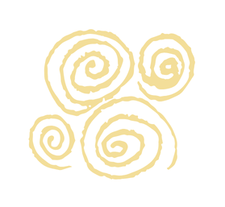

Oferta
dla przedszkoli
Projekt Cyrkowo Rozwojowo
Dla kogo?
Projekt Cyrkowo Rozwojowo skierowany jest do dzieci w wieku przedszkolnym i wczesnoszkolnym.
Jak wyglądają zajęcia?
Podczas zajęć odbywa się pokaz cyrkowy, po którym dzieci same uczą się podstaw żonglerki, balansu, czy innych cyrkowych aktywności. Nauka odbywa się poprzez zabawę w przystępny dla dzieci sposób, jest ona połączona z muzyką, tańcem i ćwiczeniami aktorskimi.
Ile trwają zajęcia?
Warsztaty trwają około 45 minut.
Ile dzieci w grupie?
Zajęcia odbywają się w grupach maksymalnie 15 osobowych.
Cennik
Cena za jedne zajęcia wynosi 250 zł, przy większej ilości grup w przedszkolu, cena jest niższa, do uzgodnienia.
Jaką rolę w rozwoju dziecka odgrywają
CYRK, TEATR I MUZYKA
Zajęcia z projektu Cyrkowo Rozwojowo, to NIE są kolejne warsztaty z rytmiki, czy zajęcia sportowe, jest to unikalne, interdyscyplinarne doświadczenie sztuki i cyrku. Oto dlaczego warto wybrać te zajęcia:
Wszechstronną sprawność i koordynację
Ruch cyrkowy, taniec i rytm rozwijają równowagę, precyzję i refleks budując zdrowe nawyki ruchowe od najmłodszych lat.
Lepsze skupienie i stymulację mózgu
Żonglowanie i inne aktywności cyrkowe łączą pracę obu półkul mózgowych, co poprawia koncentrację, pamięć i wspiera naukę szkolną.
Nieograniczoną kreatywność i wyobraźnię
Sztuka teatralna i muzyczna otwierają głowę na eksperymenty, poszukiwanie własnych rozwiązań i nieszablonowe myślenie.
Pewność siebie i odwagę
Występy i odgrywanie ról uczą radzenia sobie ze stresem, przełamują nieśmiałość i budują wiarę w swoje możliwości.
Świadomość emocjonalną i ekspresję
Teatr i muzyka dają przestrzeń do bezpiecznego wyrażania emocji, rozwijają empatię oraz wrażliwość na siebie i innych.